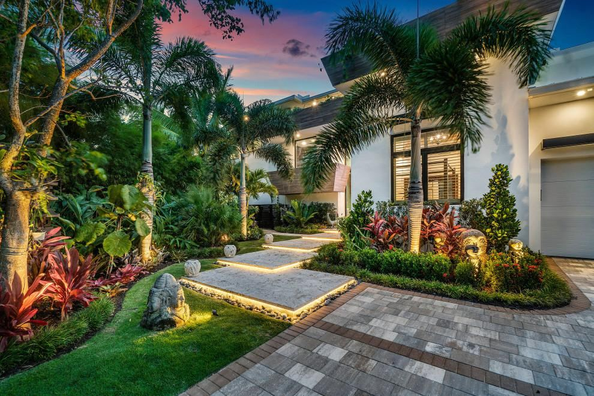
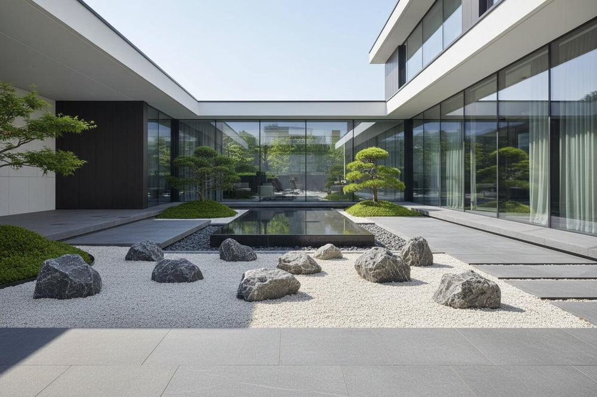

Natural textures
Courtyard calm
Stone, water and balanced greenery.

Outdoor living
Room to unwind
A relaxed place to sit and gather.

Evening atmosphere
Light the way
Warm light along garden paths.

Quiet detail
Simple materials
Texture and planting in balance.

Restful spaces
A reflective corner
A calm focal point for the garden.
Use these visual references to help describe the atmosphere and features you would like for your own space. A project gallery can be updated with photographs of completed work as they become available.